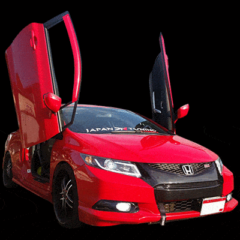

El detailing o detallado para coches es una técnica o conjunto de técnicas que contienen acciones como limpieza minuciosa y el rejuvenecimiento de las diferentes superficies del coche, proporcionando además protección al vehículo.
El detailing o técnica de detallado, como podría traducirse en español, se lleva a cabo con productos adecuados capaces de marcar una diferencia entre una limpieza simple y este proceso tan completo. Se trata de un proceso de limpieza bastante minucioso y dedicado en que se deben utilizar los productos correctos, en combinación con los productos precisos que no dañen la superficie y los materiales del coche. Retirar del coche la suciedad es sencillo pero debe haber un equilibrio entre la dosis correcta de los productos a aplicar y la técnica. El brillo de un vehículo es más difícil de obtener de lo que parece y para ello se necesita un poco más de conocimientos. Cuando hablamos de rejuvenecimiento en el detailing hablamos de un proceso en el que se recupera el aspecto nuevo del coche por medio de una serie de pasos a aplicar en zonas estratégicas como los asientos, los vinilos, las gomas, el plástico, el acrílico, entre otros y se suele hacer mediante la técnica de pulido. Como paso final viene la protección que se realiza con el fin de eliminar los daños que se producen por el uso continúo del coche, el paso del tiempo, sumado a condiciones climáticas cambiantes. Es un proceso continuo, como el proceso de encerado que evita que la pintura de la superficie se oxide. También se tratan zonas como la de los asientos para que no se agrieten y deterioren. En definitiva, el detailing es una técnica que avanza al mismo compás que los nuevos productos que salen al mercado y que permiten un resultado cada vez más
Este proceso de limpieza tiene sus orígenes en los Estados Unidos y se encarga de buscar siempre que el vehículo esté en las mejores condiciones posibles. El uso de productos y de técnicas específicas para la limpieza de los coches era algo que se fue implementando y que posteriormente acabó derivando en un paso más: el detailing.
El detailing es un proceso complejo que consta de una serie de pasos que se explicaran a continuación.
Primero se debe retirar el sucio en exceso de la carrocería, con un poco de agua. Este proceso es sencillo y se realiza con una manguera con agua a presión. Posteriormente utilizando una esponja, un poco de agua y un poco de jabón, se debe frotar toda la superficie de manera enérgica, retirando toda la suciedad tanto de carrocería como de los neumáticos. Tras ello se debe retirar el jabón con abundante agua para que la pintura no se dañe y no queden marcas. En este paso se debe utilizar una toalla especial con la que se evita el daño de la pintura
Tras el secado se deben eliminar los contaminantes externos. Para ello se debe utilizar una barra de arcilla, que elimine toda la polución restante en la carrocería que tiende a acumulase en la superficie.
Este es el paso que hará que destaque el brillo de la carrocería. La idea es utilizar el producto correcto, además de un pulimento y una pulidora, que permite que el acabado sea idóneo para resaltar el acabado.
Se trata de un proceso con el que se busca la protección de la pintura, además de proporcionar un brillo muy llamativo. Este proceso debe hacerse con un cera especial, con un aplicador y cuando se seque se procederá a retirar con un paño especial. Tras limpiar la carrocería habrá que abordar la limpieza interna del coche, para que no quede solamente nuevo por fuera sino por dentro también.